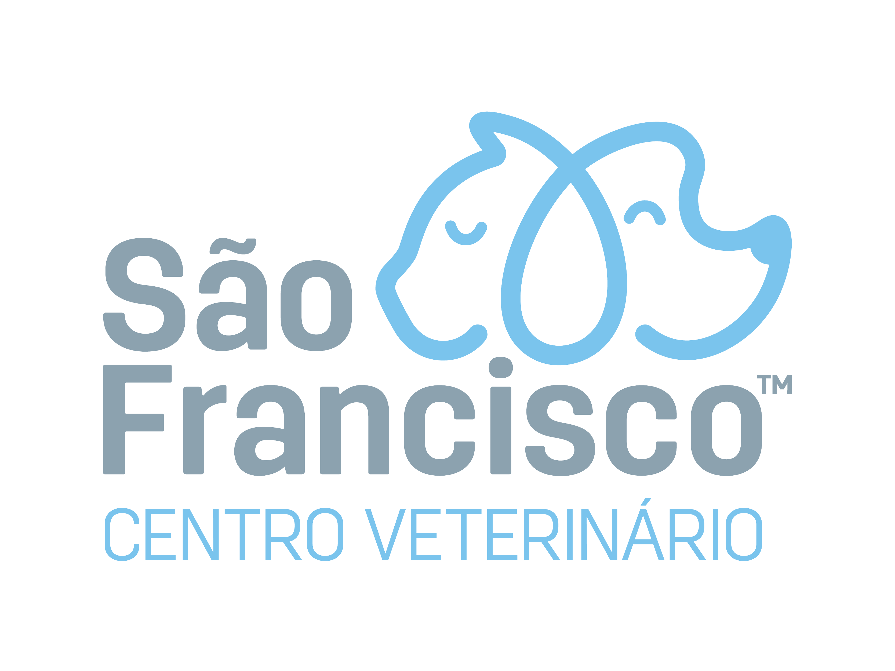
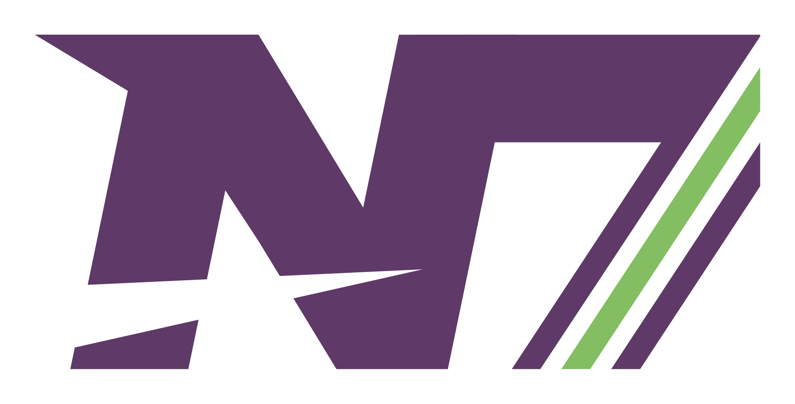

8 de novembro de 2026 · Bento Gonçalves/RS
Obrigado!
Obrigado!
Cada passo fez a diferença
O Treino Solidário de Prevenção à Diabetes foi um sucesso graças a cada pessoa que correu, caminhou, doou alimentos, trabalhou como voluntária ou simplesmente veio torcer. Muito obrigado por fazer parte desta corrente pela saúde da nossa comunidade.

Galeria
Como foi o nosso dia
Mesmo com o tempo nublado, a pista se encheu de energia. Clique numa foto para ver em tamanho maior.


Muito obrigado
A quem tornou tudo possível
Nosso agradecimento especial aos patrocinadores, parceiros e apoiadores que acreditaram na causa e ajudaram a levar prevenção e saúde para a comunidade de Bento Gonçalves.Patrocínio Master
Patrocinadores Master
Patrocínio
Patrocinadores

Realização
 Lions Clube Bento Gonçalves Cidade do Vinho
Lions Clube Bento Gonçalves Cidade do Vinho
Apoio
 Prefeitura Municipal de Bento Gonçalves · N7
Prefeitura Municipal de Bento Gonçalves · N7


Até a próxima
Nos vemos
Nos vemos
em 2027!
A próxima edição já está nos nossos planos. Até lá, siga se cuidando: movimente-se, alimente-se bem e faça seus exames em dia.
Quer apoiar a edição 2027? Fale com a gente: lionsclubebgcidadedovinho@gmail.com